8.

Found by David Cantrell in June 2007.
3. | 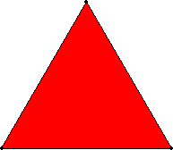 |
A = 1 Trivial. |
4. | 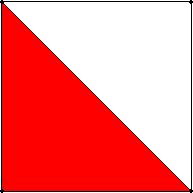 | A = 1/2 = .500 Trivial. |
5. | 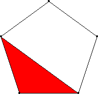 | A = (5 - √5) / 10 = .276+ Found by David Cantrell in June 2007. |
6. |
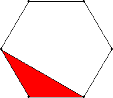 | A = 1/6 = .166+ Found by David Cantrell in June 2007. |
7. |
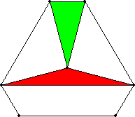 | A = 1/9 = .111+ Proved by Zhenbing Zeng and Lu Yang in 1995. |
8. |
| 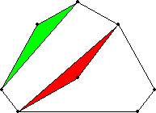 | 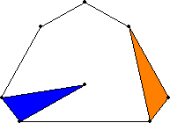 | A = .0800+ Found by David Cantrell in June 2007. |
9. |
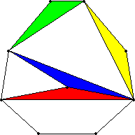 | 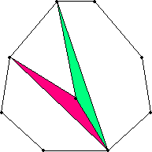 | A = .0640+ Found by David Cantrell in June 2007. |
10. |
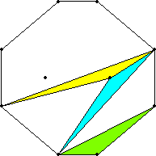 | 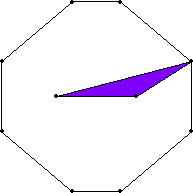 | A = .0519+ Found by David Cantrell in June 2007. |
11. |
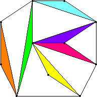 | 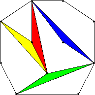 | 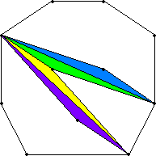 | A = 2/47 = .0425+ Found by David Cantrell in June 2007. |
12. |
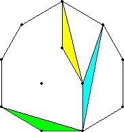 | 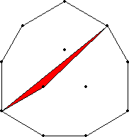 | A = 2/51 = .0392+ Found by David Cantrell in June 2007. |
13. |
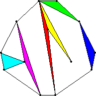 | 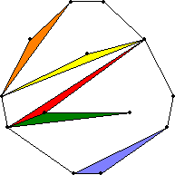 | A = .0306+ Found by David Cantrell in June 2007. |
14. |
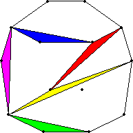 | 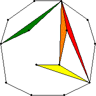 | 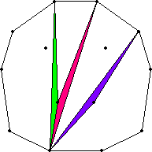 | A = .0277+ Found by David Cantrell in June 2007. |
15. |
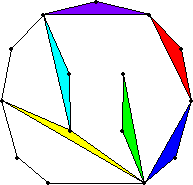 | 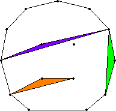 | 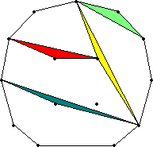 | A = .0244+ Found by David Cantrell in June 2007. |
16. |
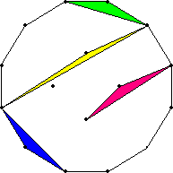 | A = .0222+ Found by David Cantrell in June 2007. |